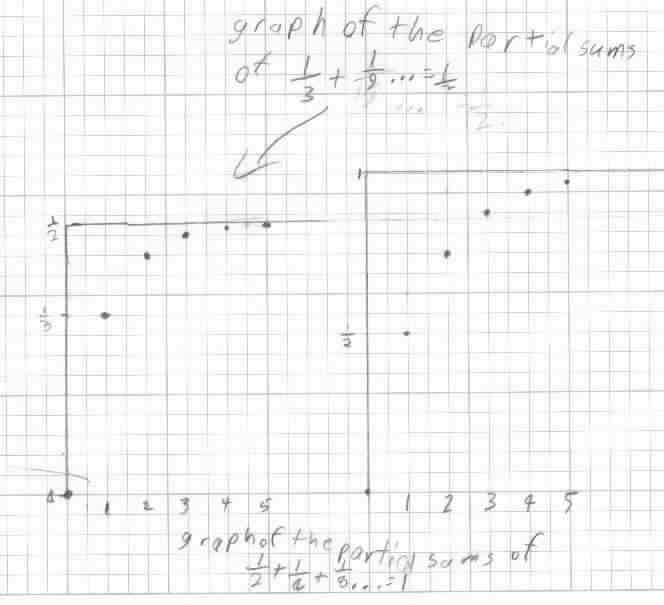
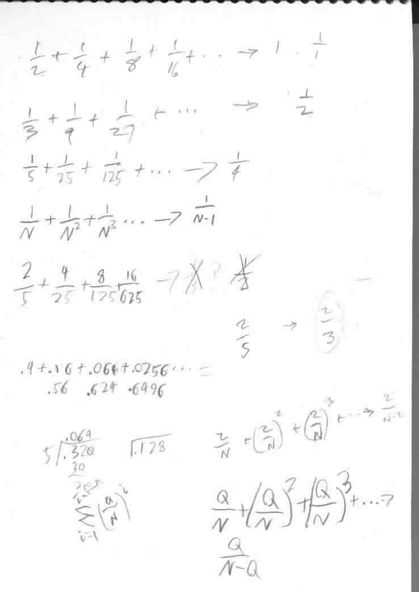
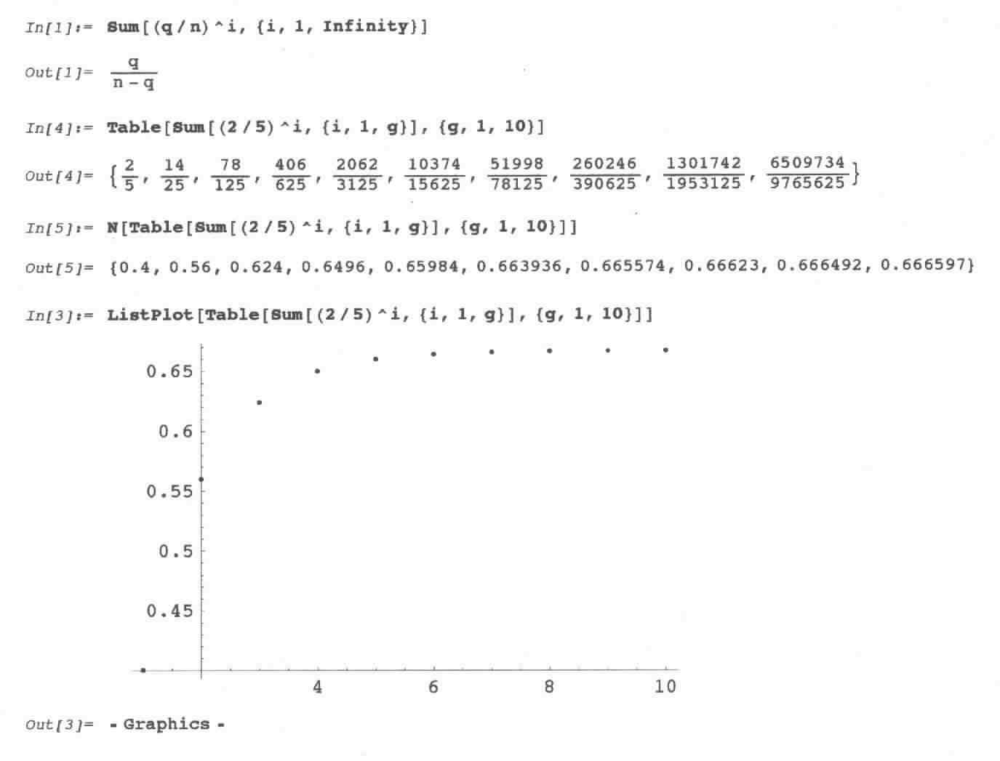

Geoffrey, as a 5th grader, generalizes Q/N + (Q/N)2 + (Q/N)3 + (Q/N)4 + ...

Geoffrey found patterns in the numerators and denominators of the partials sums. Then he found that if the infinite series started with 1/N it would go to 1/(N-1) below.

That night his Dad worked with Geoffrey using Mathematica to do the infinite sum, shown below:
